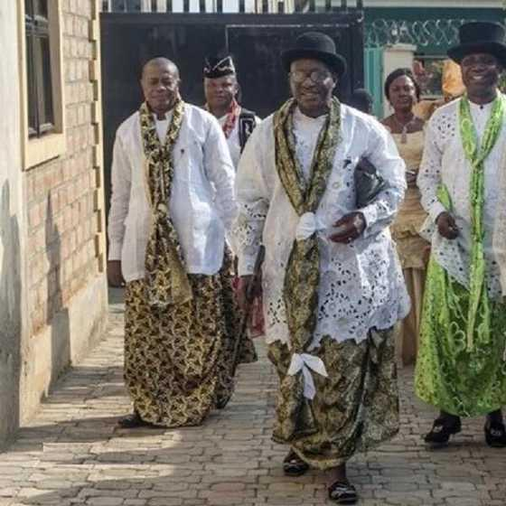

Nestled in the lush, humid lowlands of southern Nigeria, where the Cross River fans out toward the Atlantic Ocean, the Efik people stand as one of the most prominent and culturally vibrant indigenous communities in West Africa. Their story is not merely one of survival — it is a testament to cultural sophistication, diplomatic brilliance, and an enduring pride that has outlasted colonial disruption, political upheaval, and the sweeping tides of globalisation.
A Legacy of Trade and Influence
To understand the Efik is to understand the Atlantic. For centuries, their strategic coastal location in what is now Calabar — the capital of Cross River State — positioned them as indispensable middlemen in the great trade networks that connected the Niger Delta hinterland to European and transatlantic merchants (Latham, 1973). Long before formal statehood, the Efik were master traders: skilled in negotiation, multilingual by necessity, and culturally agile enough to engage the outside world without losing themselves in it.
This mercantile success created more than just material wealth. It built a cosmopolitan identity — a people who could absorb external influences and yet remain unmistakably Efik. Their port city of Old Calabar (known in Efik as Obio Ékpè) became one of the most significant trading posts in pre-colonial West Africa, drawing merchants from Britain, Portugal, and beyond. Latham (1973) notes that by the eighteenth century, Calabar had developed one of the most sophisticated commercial cultures on the continent, including written trade accounts in the Efik language — a rare feature among indigenous communities of that era.

Figure 1. Efik elders in their elegant traditional attire.
The Soul of the Efik: Culture and Belief Systems
At the heart of Efik society lies a steadfast commitment to communal living. Their value system is woven from threads of hospitality, family unity, and a profound respect for elders — values that are not merely social niceties but foundational pillars of their moral world. In Efik culture, the concept of community extends beyond the nuclear family; it encompasses the House System (Ufok), which historically functioned as both an economic unit and a social safety net (Aye, 1991).
Proverbs hold a particularly important place in Efik culture. As Essien (2019) documents, food metaphors appear frequently in Efik proverbs, encoding complex truths about relationships, justice, and social responsibility. A culture that embeds its philosophy in the language of cooking speaks to a people for whom daily life and deep wisdom are never far apart.
Spiritual Heritage and Evolution
The spiritual journey of the Efik is one of remarkable evolution. Long before Christianity became a cornerstone of modern Calabar life, the Efik practised a traditional religion centred on belief in Abasi — a supreme creator — accompanied by deep reverence for ancestors, who were considered active guardians of the community's moral and social order (Aye, 1991). The feared and respected Ékpè masquerade society, which combined religious, judicial, and regulatory functions, was central to maintaining order in Efik society.
Christianity arrived in Calabar in the nineteenth century and was embraced with notable enthusiasm, yet the old roots were never entirely severed. Today, many Efik families maintain a quietly parallel spiritual identity — attending Sunday services while honouring the wisdom of ancestors through prayer and ceremony. This layered spiritual life is not contradiction; it is continuity.
Celebrations and Splendour: The Calabar Carnival
Nothing captures the exuberant spirit of the Efik heritage quite like the world-famous Calabar Carnival. Held annually every December, it is widely recognised as Africa's largest street carnival, drawing hundreds of thousands of visitors from across Nigeria and beyond. The carnival serves as both cultural exhibition and living archive — a stage on which Efik traditions in music, fashion, storytelling, and dance are performed for new generations and curious outsiders alike.
Critically, the carnival is not simply entertainment. It is a deliberate cultural preservation strategy, drawing from the Efik's long tradition of using festivity as a vehicle for communal memory. Behind the glittering costumes and pulsating music are centuries of choreographed meaning (Encyclopaedia Britannica, 2026).
Figure 2. Calabar Carnival participants in elaborate beaded costumes. Often described as Africa's biggest street party.
Elegance in Threads: Traditional Attire
The Efik aesthetic is perhaps best expressed in their clothing — a masterclass in elegance, symbolism, and cultural pride. Every garment worn by an Efik man or woman communicates something about their status, occasion, and lineage.
Efik men are typically seen in long, flowing shirts paired with intricately tied wrappers, complemented by traditional caps and ornate beaded accessories. A walking stick — not merely decorative — functions as a symbol of authority and maturity, its presence signalling a man of standing in his community.
For Efik women, dress is an art form. Their decorative wrappers and beautifully tailored blouses are adorned with layers of vibrant coral beads — often inherited across generations — and elaborate head ties that can take considerable skill to arrange correctly. These coral beads are not merely ornamental; they are heirlooms, markers of wealth, and carriers of family history. As Wikipedia Contributors (2026) note, coral beads hold specific spiritual and social significance in Efik culture, and their display at ceremonies marks the identity of the wearer within the broader community.
"To enter an Efik home is to experience a culture that treats every guest with dignity — a belief system that prioritises the collective well-being over individual gain."
The Efik people remind us that indigenous culture is not a relic of the past — it is a living, breathing system of meaning that continues to shape identities, anchor communities, and offer the world a profound alternative vision of what it means to be human. Their story is still unfolding, on the banks of the Cross River, in the kitchens of Calabar, and in the hearts of every Efik person navigating the twenty-first century without abandoning the wisdom of their ancestors.
References (APA 7th Edition)
- Aye, E. U. (1991). The Efik people. Glad Tidings Press.
- Encyclopaedia Britannica. (2026). Efik. https://www.britannica.com/topic/Efik
- Essien, O. E. (2019). Food metaphors in Efik proverbs and their cultural meanings. Journal of Black Studies, 50(4), 385–401.
- Latham, A. J. H. (1973). Old Calabar 1600–1891: The impact of the international economy upon a traditional society. Clarendon Press.
- Wikipedia Contributors. (2026). Efik people. Wikipedia. https://en.wikipedia.org/wiki/Efik_people